Plan wycieczki
Dzień pierwszy
- Aqueduto das Aguas Livres
- Guerra Jeronimo Gardens
- Bazylika Estrela
- Cementery Prazeres
Dzień drugi
- Pomnik Odkrywców
- Belem Tower
- Muzeum Archeologii i Klasztor Hieronimitów
- Ogród Botaniczny Ajuda
- Pałac Ajuda
- Muzeum Powozów
- MAAT
- Pilar 7
- Mercado da Ribeira
- Pink Street
- punkt widokowy św. Katarzyny
- Parlament
- Largo do Chiado
- Municipal Square
- Praca do Comercio
- Arco da Rua Augusta
Dzień trzeci
- Igreja de Santa Luzia
- Miraduoro das Portas do Sol
- Church of São Vicente de Fora
- Panteon Narodowy
- Museu Nacional do Azulejo
- Oceanarium
- Parque Eduardo VII
- Miradouro de São Pedro de Alcântara
- Klasztor Karmelitów
- Santa Justa
Czas wycieczki: 2,5 dnia
Skład osobowy: 2 dorosłych
Kilometry pokonane pieszo: 53 plus sporo kilometrów pokonanych komunikacją miejską
rzybliżony koszt na osobę: 900 PLN, bez kosztów wyżywienia
Jeśli planujecie intensywne zwiedzanie Lizbony, to Lisboa Card jest dobrym wyborem. Pozwala na jazdę różnymi środkami komunikacji miejskiej oraz wejście do na prawdę dużej ilości zabytków. Jeśli któregoś miejsca, jak na przykład Oceanarium, nie ma na liście darmowych wejściówek, karta pozwala kupić bilet ze zniżką. Kartę można kupić online tutaj: https://shop.visitlisboa.com i odebrać w punkcie na lotnisku, wtedy zaoszczędzimy kilka euro. Jeśli chodzi o komunikację miejską, można korzystać ze strony https://www.carris.pt/ albo z google maps (w dni powszednie rozkład zgadzał się z tym na stronie carris, w niedziele niestety nie). Trzeba tylko pamiętać o kilku rzeczach: do autobusów i tramwajów wsiadamy pierwszymi drzwiami a wysiadamy pozostałymi. Wszystkie przystanki są "na żądanie", więc jeśli nie pomachacie kierowcy wcześniej, to pomachacie mu na pożegnanie tak jak my 🙈. Oprócz bardziej popularnych w innych miejscach środków komunikacji miejskiej warto też skorzystać z wind czy kolejek, które wywiozą nas na wszystkie wzgórza, na które już nie będziecie mieć siły wchodzić na nogach.
Plan wycieczki
Trasa
Zwiedzanie
AQUEDUTO DAS AGUAS LIVRES, GUERRA JERONIMO GARDENS, BAZYLIKA ESTRELA I CEMENTERY PRAZERES
Do Lizbony dotarliśmy wczesnym popołudniem. Po odebraniu Lisboa Card i obiedzie ruszyliśmy zwiedzać. Z lotniska do centrum bezproblemowo, szybko i tanio można dotrzeć metrem, które znajdziecie zaraz obok lotniska. Jeśli przylatujecie lub wylatujecie w nocy lub wcześnie rano, niestety wtedy nie da się skorzystać z komunikacji miejskiej, która ma wtedy mocno okrojone godziny oraz trasy. My w drodze powrotnej skorzystaliśmy z Ubera. Pierwszym punktem na trasie był akwedukt, który został wpisany do księgi rekordów Guinnessa jako budowla z największym kamiennym łukiem na świecie. Niestety nie można już wejść na górę akweduktu (został on zamknięty z powodu grasującego tam niegdyś seryjnego mordercy), ale samo stanie u stóp wielkich, gotyckich łuków robi wrażenie. Akwedukt jako jedna z nielicznych budowli przetrwał trzęsienie ziemi w 1755 roku. Jeśli pojawicie się tam wcześniej niż my, możecie dodać dodatkowy punkt do planu zwiedzania: Zbiornik Wodny Mae d’Aqua. Nam niestety nie udało się wejść do środka, ponieważ dotarlibyśmy tam już po zamknięciu. Krótki spacer i jesteśmy w Guerra Jeronimo Gardens - ogrodzie w stylu angielskim. Trafiliśmy akurat na moment, w którym zaświecane były znajdujące się w nim latarnie. Dopóki się nie rozgrzeją, świecą na zielono i budują bardzo ciekawą kompozycję z otaczającą je roślinnością. Naprzeciwko wyjścia z ogrodu znajduje się Bazylika Estrela. Jest to jedna z największych sakralnych budowli w Lizbonie. Według przewodnika, w środku nieopodal przyciągającego wzrok nagrobka fundatorki można znaleźć szopkę wykonaną z korkowych i terakotowych figurek. Jest ich około 500, ale chyba ktoś ją dobrze schował, bo nie mogliśmy jej nigdzie wypatrzeć 🙈 . Jeszcze jeden krótki spacer i docieramy do cmentarza Prazeres. Jest to swoiste miasteczko umarłych: grobowce mają kształt domków oraz są ponumerowane. Sam cmentarz od początku swojego istnienia skupia groby znanych i znamienitych postaci w Portugalii. Zaraz obok cmentarza możecie złapać słynny tramwaj 28.

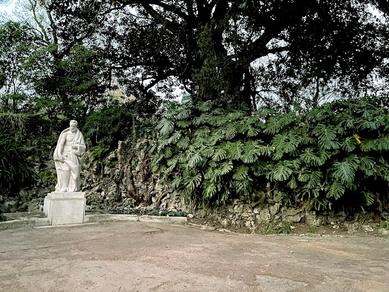
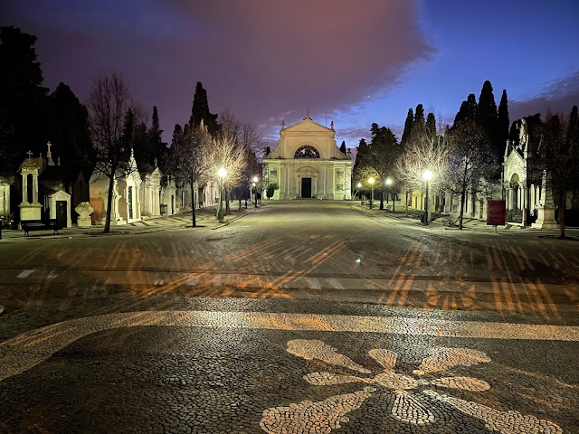
Zwiedzanie
POMNIK ODKRYWCÓW I BELEM TOWER
Sporo Lizbońskich zabytków otwiera się dopiero o 10, więc jeśli lubicie wcześnie startować ze zwiedzaniem, to musicie wziąć to pod uwagę. Drugi dzień zaczęliśmy od dzielnicy Belem. Na pierwszy ogień wzięliśmy pomnik Odkrywców. Możecie na nim zobaczyć całą śmietankę bohaterów z epoki wielkich odkrywców. Na ich czele stoi słynny Henryk Żeglarz a w sumie znajdziecie tam 33 figury, stojące na gotowym do wypłynięcia statku. Można również wyjechać na szczyt pomnika, skąd po za piękną panoramą można też podziwiać podarunek od RPA - wielką różę wiatrów, na której zaznaczono portugalskie podboje. W niedalekiej odległości znajdziecie wieżę Belem, która w ciągu swojego istnienia była więzieniem, placówką celną, latarnią morską, placówką telegrafu a także pełniła funkcje obronne. Wieża ma pięć, w większości pustych poziomów, do których prowadzą wąskie i kręte schody. Zabytek ten wpisany jest na listę UNESCO. Nie zapomnijcie zwiedzić najniższego poziomu - można tam zobaczyć otwory w podłodze, w których umieszczani byli więźniowie. Ale nie była to zwykła "dziura w ziemi". W czasie przypływów wypełniała się wodą. Jeśli korzystacie z Lisboa Card, musicie podejść do znajdującej się niedaleko budki z biletami i pobrać darmową wejściówkę.


Zwiedzanie
MUZEUM ARCHEOLOGII I KLASZTOR HIERONIMITÓW
Zmierzając do klasztoru zatrzymaliśmy się w miejscu, które jak nam się wydawało, jest wejściem do tego zabytku (opisy w atrakcjach turystycznych pozostawiają trochę do życzenia). Okazało się, że to wejście do muzeum Archeologii. Skoro i tak już tam byliśmy i lizbońska karta pozwalała na darmowe wejście, to postanowiliśmy skorzystać. W środku można zobaczyć stałą wystawę opowiadającym o starożytnym Egipcie, obejrzeć sarkofagi a także zobaczyć skarby portugalskiej archeologii. Po wyjściu z muzeum trafiliśmy już bez pomyłek do klasztoru. Zrobił na nas na prawdę duże wrażenie. Sam budynek z zewnątrz jest ogromny, po wejściu do środka nie czuliśmy się jednak przytłoczeni, jak w niektórych innych budowlach sakralnych. Misternie wykonane krużganki, które są pięknym przykładem kunsztu mistrzów kamieniarstwa, wyglądają pięknie. Dopisała nam pogoda, więc delikatne promienie słońca dodatkowo podkreślały wszystkie rzeźby i dekory. Gdyby nie długa lista rzeczy, które chcieliśmy jeszcze zobaczyć tego dnia, z pewnością spędzilibyśmy tam więcej czasu. Klasztor, tak jak akwedukt który widzieliśmy pierwszego dnia, na szczęście przetrwał trzęsienie ziemi. Możecie tutaj zobaczyć również grobowiec Vasco da Gamy oraz innych wybitnych portugalskich postaci. Przed dalszą trasą zatrzymaliśmy się jeszcze, żeby spróbować lokalnego przysmaku, wywodzącego się właśnie z dzielnicy Belem: pasteis de nata. Jeśli macie czas, możecie ustawić się w kolejce do https://pasteisdebelem.pt/en/.


Zwiedzanie
OGRÓD BOTANICZNY I PAŁAC AJUDA
Jardim Botânico d’Ajuda jest jednym z najstarszych ogrodów botanicznych w Portugalii. Został założony na życzenie króla w miejscu, gdzie rodzina królewska pomieszkiwała w namiotach. Z powodu przeżytego trzęsienia ziemi król Józef I odmawiał zamieszkania w budynkach wybudowanych z cegieł. W ogrodzie oprócz kolekcji różnego rodzaju roślin, spotkaliśmy całe stado pawi. Zarówno tych kolorowych jak i albinosów. Ukryły się za budynkiem, w którym znajduje się toaleta i mieliśmy trochę szczęścia, że udało nam się je wypatrzeć. W ogrodzie panuje spokój, słychać śpiew ptaków i można także natknąć się na papugi. To idealne miejsce, żeby chwilę odpocząć zwłaszcza, jeśli ktoś wspiął się na to wzgórze na własnych nogach. Niedaleko, po drugiej stronie ulicy wznosi się Pałac Narodowy Ajuda. W tym miejscu pierwotnie stała inna rezydencja rodziny królewskiej, ale została zniszczona przez pożar. W przeciągu 20 lat powstał pałac, który możemy zwiedzać dzisiaj. W środku znajdziemy urządzone z przepychem sale i pokoje, urozmaicone pod względem kolorystyki i stylu oraz bardzo dużo przedmiotów codziennego użytku.


Zwiedzanie
MUZEUM POWOZÓW, MAAT I PILAR 7
Wracając nad Tag zatrzymaliśmy się w Narodowym Muzeum Powozów. Muzeum jest dość surowe i proste, ale dzięki temu nie odciąga uwagi od różnorodności zebranych w nim powozów. Można tutaj zobaczyć ociekające złotem i zdobieniami królewskie karocę, małe powozy używane przez dzieci, dyliżanse pocztowe a także powóz, którym przewożeni byli więźniowie (ma domalowane atrapy okien). Dodatkowo znajdują się tutaj stroje tak dla powożących jak i dla koni oraz kompletny powóz wraz z figurami koni, który pokazuje, jak to wszystko było ze sobą połączone. Kładką przechodzimy na drugą stronę ulicy i jesteśmy w drugim najlepszym według nas miejscu w Lizbonie: dawnej elektrowni Central Tejo. To jedno z niewielu miejsc, gdzie można dotknąć całej maszynerii, przejść przez poziomy elektrowni a nawet przez środek pieca! Znajdziecie tutaj bardzo dużą dawkę wiedzy i historii podanej w niezwykle przystępny sposób. W środku czekają na Was również interaktywne niespodzianki (prawie dostałam zawału, kiedy po wejściu do pieca ten uruchomił głośną machinę 🙈). Po za wyposażeniem elektrowni można również doświadczyć na własnej skórze różnych zagadnień związanych z elektrycznością, bo muzeum przygotowało również cały szereg ciekawych doświadczeń (nie tylko dla dzieci, a przynajmniej nikt nam nie powiedział, że to może być tylko dla dzieci 😁). Po wyjściu, małych perypetiach z pociągiem i biegu w deszczu trafiamy do Pilar 7. Jest to punkt widokowy na moście 25 kwietnia połączony z historią powstania mostu. Po za kulminacyjnym punktem tego miejsca, którym jest wyjechanie windą do poziomu jezdni, można obejrzeć makietę mostu a także zobaczyć, jak wygląda mocowanie stalowych lin wewnątrz filarów. Na szczycie możemy spędzić 10 minut a w tym czasie warto spojrzeć z bliska na konstrukcje mostu a także stanąć na częściowo przeszklonej podłodze, która znajduje się 80 metrów nad powierzchnią wody.


Zwiedzanie
MERCADO DA RIBEIRA, PINK STREET I PUNKT WIDOKOWY ŚW. KATARZYNY
WPo obiedzie planowaliśmy zobaczyć targ Mercado da Ribeira, ale jeśli chcecie poczuć klimat tego miejsca, najlepiej przyjechać tutaj rano. Po obiedzie można zobaczyć jedynie pustą halę targową oraz ozdobioną płytkami azulejos galerię na pierwszym piętrze. Idąc dalej przechodzimy przez Pink Street, czyli nic innego jak ulicę pomalowaną na różowy kolor (kolejnego dnia natknęliśmy się na pomalowaną na niebiesko). A potem wędrując wąskimi uliczkami i chłonąc klimat Lizbony, poszliśmy w kierunku punktu widokowego św. Katarzyny. Można do niego wyjechać kolejką linowo-terenową, która niestety była nieczynna. Po krótkiej wspinaczce jesteśmy na miejscu. Można tutaj odpocząć i nacieszyć oczy panoramą Tagu, widać stąd też pomnik Chrystusa Króla, który znajduje się na drugim brzegu rzeki oraz most 25 kwietnia.
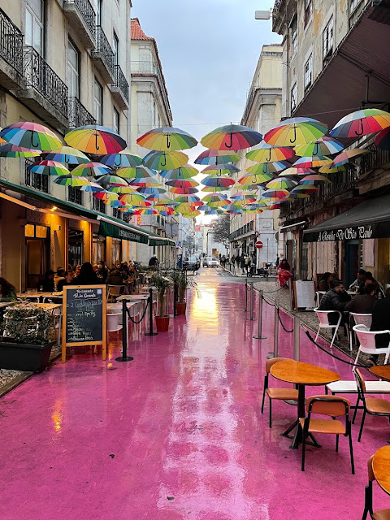
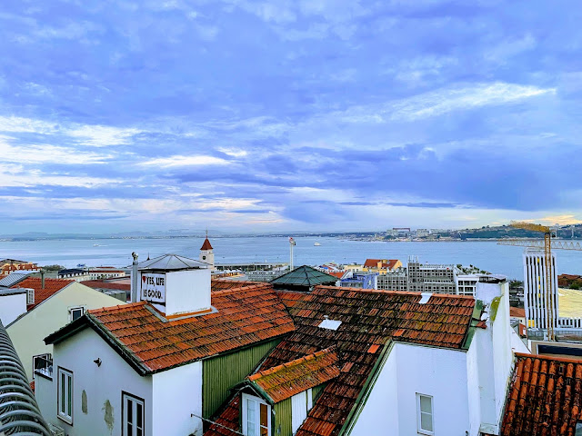
Zwiedzanie
PARLAMENT I LARGO DO CHIADO
Już po zachodzie słońca odwiedziliśmy parlament. Historia tego budynku zaczęła się w XVI wieku, kiedy w tym miejscu rozpoczęto budowę klasztoru Benedyktynów. Kiedy wszystkie zakony religijne zostały rozwiązane, umiejscowiono tutaj parlament właśnie. Przy głównym wejściu możecie zobaczyć cztery figury, które symbolizują kolejno Rozsądek, Sprawiedliwość, Mądrość i Umiar. Złapaliśmy tramwaj i pojechaliśmy w kierunku Largo do Chiado. Muszę przyznać, ze jazda tramwajem wśród tutejszych wąskich uliczek dostarcza niemałych emocji 😅 . Na miejscu można zobaczyć dwa kościoły umiejscowione po dwóch stronach ulicy. Z tego właśnie powodu plac ten nazywany jest placem dwóch kościołów.
Zwiedzanie
MUNICIPAL SQUARE, PRACA DO COMERCIO I ARCO DA RUA AUGUSTA
Spacerując dalej po zmroku w kierunku naszych ostatnich punktów w tym dniu natknęliśmy się na sklep z sardynkami. Sardynki są specjalnością Portugalczyków i ten sklepik bardzo dobrze to potwierdził. Bogactwo smaków, rodzajów i pluszowe sardynki przyciągnęłynie tylko naszą uwagę. Idąc dalej mijamy lizboński ratusz, na którym w geście poparcia dla Ukrainy wyświetlana była jej flaga. Przed ratuszem można również zauważyć ozdobny bruk. Na kocu docieramy do obszernego Praca do Comercio. Plac wraz z sporą częścią Lizbony został zupełnie zniszczony podczas trzęsienia ziemi. Dzisiaj można tutaj posłuchać historii miasta w nowoczesnym Lisboa Story Center, udać się do jednej z okolicznych restauracji oraz podziwiać pomnik króla Józefa wraz z Łukiem Triumfalnym. Za samym łukiem rozciąga się najpopularniejsza ulica stolicy: Rua Augusta.
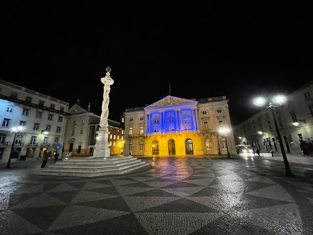
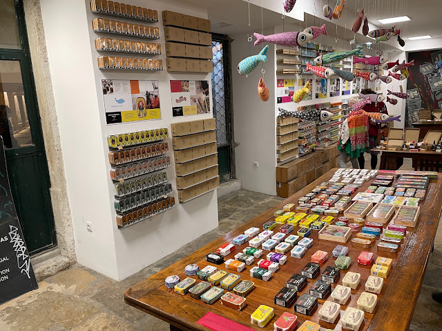
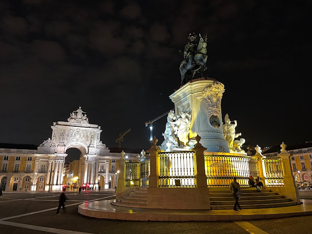
Zwiedzanie
IGREJA DE SANTA LUZIA I MIRADUORO DAS PORTAS DO SOL
Ostatni dzień przywitał nas piękną pogodą, idealną, żeby odwiedzić kolejne punkty widokowe. Zaczęliśmy od tego usytuowanego przy kościele św. Łucji. I to był strzał w dziesiątkę: piękny widok, piękna pogoda i cisza przerywana jedynie spokojną grą na gitarze. Jest tutaj również pergola obrośnięta pnączem, która zdecydowanie będzie dodawała uroku, jeśli pojawicie się tutaj w cieplejszych miesiącach. Niedaleko trafiamy na kolejny punkt widokowy, czyli Bramy Słońca. Oprócz wspanialej panoramy można tutaj zobaczyć pomnik św. Wincentego - patrona Lizbony.
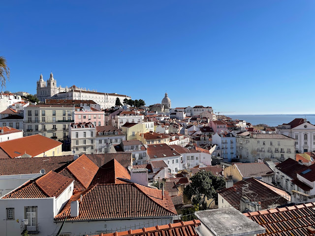
Zwiedzanie
PCHURCH OF SÃO VICENTE DE FORA I PANTEON
Następne punkty wycieczki były bardzo dobrze widoczne z punktu widokowego. Najpierw odwiedzamy kościół św. Wincenta za Murami, jeden z największych w czasach średniowiecznych. A powstał w miejscu, gdzie król Alfons Henryk rozbił obóz w trakcie oblężenia stolicy. Niedaleko wejścia można podziwiać panele azulejos. Idąc dalej docieramy do miejsca, które zdecydowanie przyciąga wzrok już z daleka. Panteon miał być kościołem, ale z uwagi na niekończące się prace zdecydowano o przekształceniu go w to, czym jest obecnie. W marmurowych wnętrzach pochowani są prezydenci, słynne postaci a także można tutaj znaleść symboliczne grobowce bohaterów narodowych. Z tarasu rozciąga się wspaniały widok, więc nie zapomnijcie wspiąć się na górę. Kiedy ruszyliśmy dalej, natknęliśmy się na duży mural wykonany ze słynnych płytek azulejos - na zdjęciu udało się nam uchwycić tylko jego fragment.
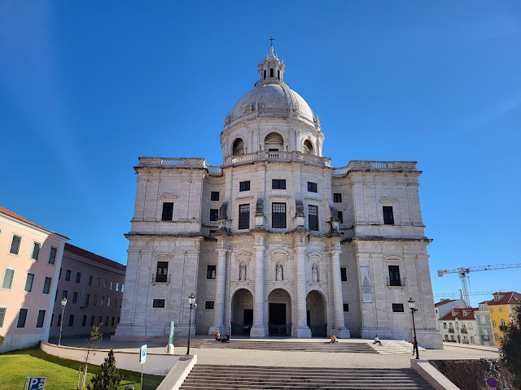
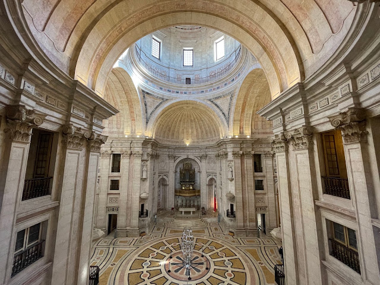
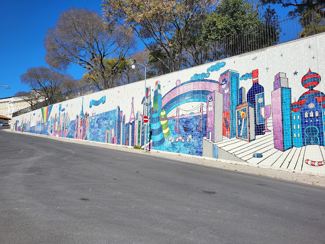
Zwiedzanie
MUSEU NACIONAL DO AZULEJO
Mural był tylko przedsmakiem do tego, co zobaczyliśmy chwile później. Muzeum Narodowe Azulejo znajduje się w dawnym klasztorze, którego część zabudowań została zniszczona w trakcie trzęsienia ziemi. Tysiącletnia historia kafelków połączonych z malarstwem została tutaj przedstawiona w sposób chronologiczny. Wraz z przechodzeniem przez kolejne pomieszczenia można zauważyć zmianę stylu. Prawdziwą wisienką na torcie jest 36 metrowa panorama Lizbony, wykonana w całości z tych płytek właśnie. Co ciekawsze, panorama przedstawia miasto sprzed katastrofalnego w skutkach trzęsienia ziemi, więc jest wspaniałym obiektem do porównania z dzisiejszą zabudową miasta.
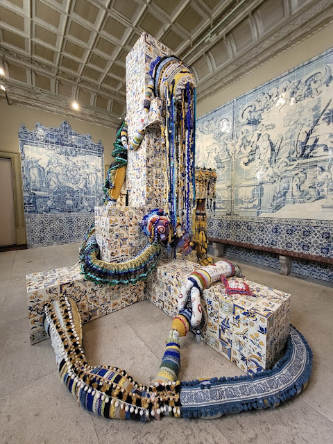
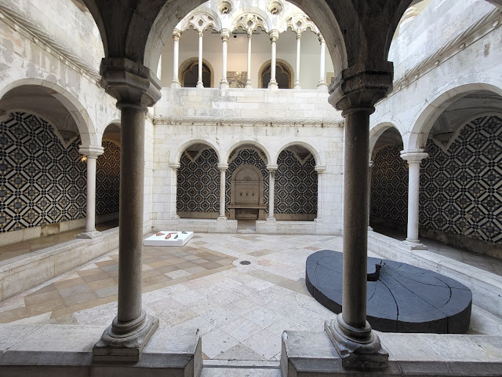
Zwiedzanie
OCEANARIUM
Naszym zdaniem najlepsze miejsce do zobaczenia w Lizbonie. Największe oceanarium w Europie jest niesamowite. Moglibyśmy spędzić w nim cały dzień. Podczas zwiedzania krążymy wokół głównego zbiornika, który ma pojemność 5 tysięcy metrów sześciennych. A w nim pięknie zaaranżowane morskie głębiny z bogactwem różnego rodzaju morskich stworzeń. W niektórych miejscach postarano się nawet o efekt promieni słonecznych przebijających przez powierzchnię wody. Jest tam po prostu pięknie i spokojnie. Można podziwiać odtworzone ekosystemy czterech oceanów, wszystko właściwie na wyciągnięcie ręki. Oprócz głównego zbiornika są też mniejsze, rozmieszczone dookoła oceanarium. A tam czekają na nas pingwiny (na odtworzonym fragmencie lodowca), wydry i wiele więcej. W mniejszych akwariach zobaczyliśmy rafy koralowe, koniki morskie, kraby, rozgwiazdy, fluorescencyjna rafa koralowa i wiele, wiele więcej. W akompaniamencie odgłosów oceanu można zobaczyć 25 tysięcy różnego rodzaju morskich stworzeń.
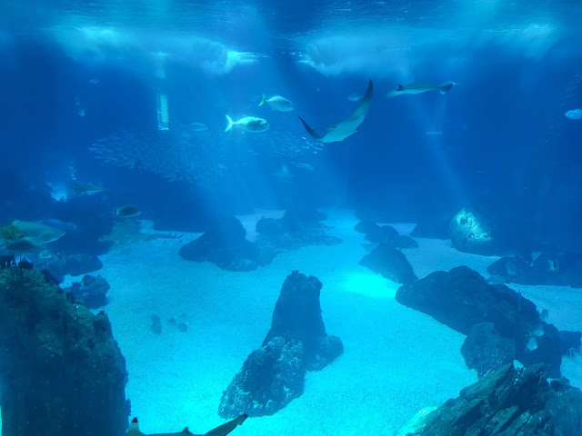
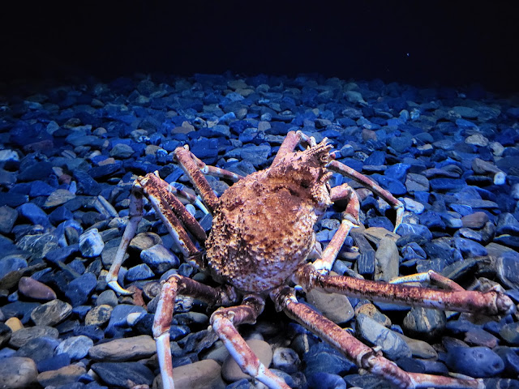
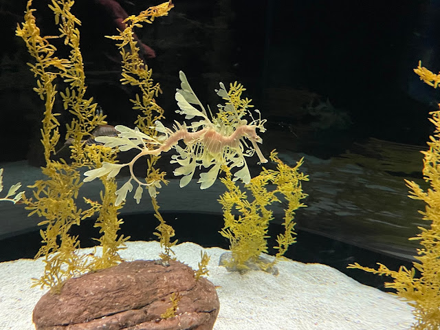
Zwiedzanie
PARQUE EDUARDO VII I MIRADOURO DE SÃO PEDRO DE ALCÂNTARA
Wróciliśmy na powierzchnie prosto do parku Edwarda VII. A tutaj czekało na nas 25 hektarów parku wraz z panoramą Lizbony. Idąc w dół parku można zajrzeć do 8 hektarowego ogrodu szklarniowego, w którym można znaleść rośliny z przeróżnych zakątków świata. Niestety, szklarnia była nieczynna więc nie udało nam się wejść do środka. Podczas zdobywania przedostatniego punktu widokowego na naszej liście udało nam się złapać kolejkę linowo-torową i wyjechać nią na górę. A tam z jednej strony do odpoczynku park z fontanną a z drugiej kolejna, szeroka panorama miasta.
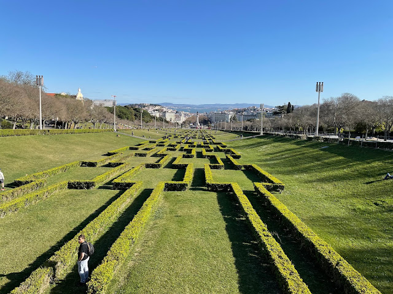
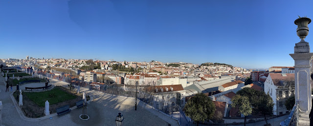
Zwiedzanie
KLASZTOR KARMELITÓW I SANTA JUSTA
Idąc z punktu widokowego w kierunku słynnej windy Santa Justa mieliśmy w planach odwiedzić ruiny klasztoru Karmelitów. Niestety, to co pozostało z kościoła po trzęsieniu ziemi było akurat nieczynne tego dnia. W środku można zobaczyć piękne gotyckie łuki, które z pewnością robią niesamowite wrażenie w polaczeniu z bezchmurnym niebem. No i finałowy punkt wycieczki, czyli winda Santa Justa, stworzona przez ucznia Gustawa Eiffela. Początkowo winda napędzaną była parą wodną, kilka lat później zostało to zastąpione elektrycznością. Samo wyjechanie na górę z pewnością pozwala na zaoszczędzenie czasu w porównaniu do pokonywania wzgórza pieszo. Jednak trzeba wziąć poprawkę na długą kolejkę oczekujących na wyjazd. Tak czy inaczej uważamy, że było warto, a widok ze szczytu, po za "zaliczonymi" puntami widokowymi w naprawdę sporej ilości, wraz z samym przejazdem wynagradza czekanie.
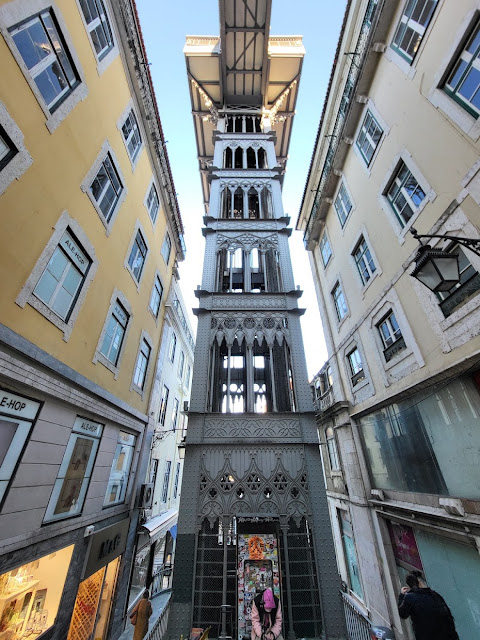
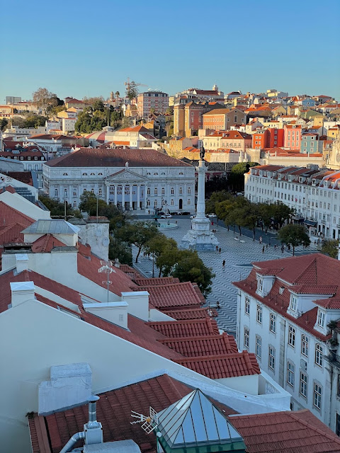